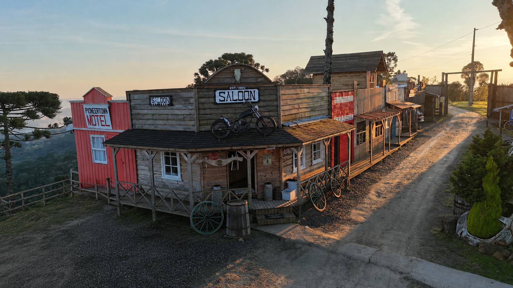
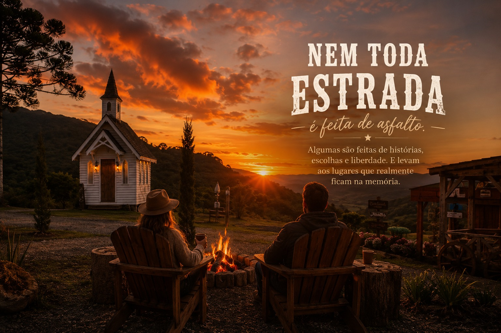
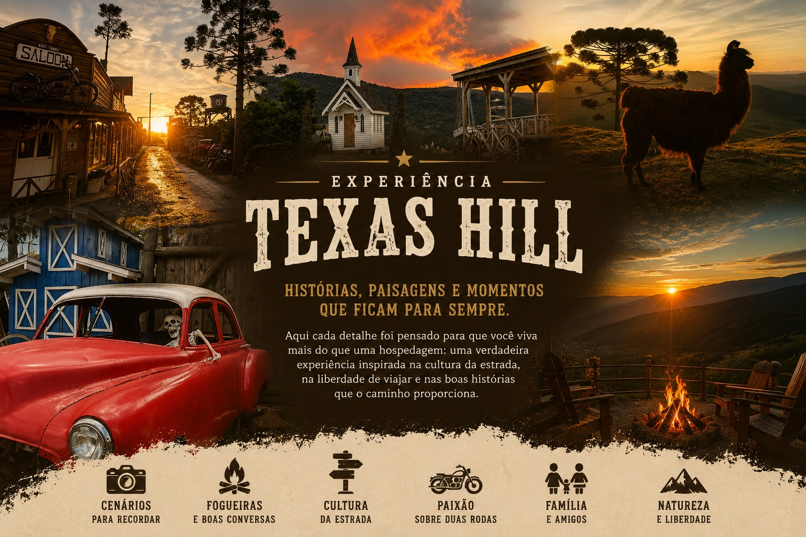

Uma vila western em meio à Serra Catarinense, pensada para quem viaja de moto, de carro ou em família — e quer levar para casa mais do que fotos.
Reservar AgoraA nossa não terminou quando a estrada acabou.
A história da Texas Hill começou muito antes da primeira construção. Ela nasceu durante uma viagem de volta ao mundo.
Enquanto percorria diferentes países e conhecia lugares que recebiam viajantes de forma acolhedora e inesquecível, Alfredo Souza percebeu que os destinos mais marcantes não eram, necessariamente, os mais luxuosos. Eram aqueles que tinham alma, história e faziam as pessoas se sentirem em casa.
Foi então que surgiu um sonho: um dia construir, no Brasil, um lugar onde viajantes pudessem descansar, compartilhar histórias e viver experiências que fossem muito além de uma simples hospedagem.
Mas, em 2020, a pandemia mudou os planos. A viagem precisou ser interrompida e Alfredo retornou ao Brasil. O que parecia o fim de uma grande aventura acabou se tornando o início de outra ainda maior.
Em maio de 2021, ele e sua esposa deram o primeiro passo para transformar aquele sonho em realidade.
Naquela época, aqui existia apenas um campo. Sem grandes estruturas. Sem máquinas. Sem investidores. Apenas um terreno, muita vontade de fazer acontecer e a certeza de que aquele lugar poderia se tornar especial.
Com as próprias mãos, trabalhando dia após dia, e com a ajuda de familiares, amigos e muitas pessoas que acreditaram nesse projeto, cada construção foi surgindo pouco a pouco. Cada parede levantada, cada detalhe em madeira, cada pedra colocada e cada novo espaço carregam um pedaço dessa história.
A Texas Hill não foi construída de uma só vez. Ela continua sendo construída todos os dias.
E talvez seja justamente isso que a torna diferente.
Porque quando você caminha por aqui, não está apenas visitando uma pousada. Está conhecendo um sonho que saiu do papel, venceu desafios e continua crescendo graças a pessoas que acreditam que viajar é muito mais do que chegar ao destino.
Seja bem-vindo à Texas Hill. Agora você também faz parte dessa história.


Elas vão sendo escritas ao longo do caminho.
A Vila Western da Texas Hill nasceu exatamente assim.
Curiosamente, ela nunca foi um grande projeto desenhado em uma prancheta. Não existia um plano completo mostrando como tudo seria no futuro. A cidade foi surgindo da mesma forma que as antigas cidades do Velho Oeste: uma construção de cada vez, conforme novas necessidades e novos sonhos apareciam.
Tudo começou com uma pequena edificação inspirada na arquitetura do Velho Oeste americano. A ideia era simples: criar um abrigo especial para o casal de lhamas que vive na propriedade.
Pouco tempo depois nasceu a segunda construção, a Blacksmithing, projetada para ser a oficina da pousada. Mas, à medida que o projeto crescia, percebemos que também precisaríamos de um espaço para receber nossos hóspedes.
Foi então que surgiu o Saloon, construído na esquina da vila e inspirado nos tradicionais pontos de encontro das antigas cidades do oeste americano. Mais do que uma recepção, ele se tornou o coração da Texas Hill — um lugar onde viajantes chegam, conversam, compartilham histórias e começam a viver a experiência da pousada.
A partir dali, percebemos que aquelas construções já não eram edifícios isolados. Elas estavam dando vida a uma cidade.
Vieram novas fachadas, novas ideias e novos detalhes, até que uma quadra inteira começou a tomar forma, inspirada em Pioneertown, na Califórnia, uma cidade cenográfica criada para filmes de faroeste e que sempre despertou nossa imaginação durante as viagens.
Hoje, caminhar pela Vila Western é como passear por uma cidade que continua crescendo.
Além das construções temáticas, a vila abriga um pequeno museu com objetos antigos que ajudam a contar a história da região, além de um acervo dedicado às viagens de Alfredo Souza pela América do Sul e pelo mundo. O espaço também reúne itens doados por grandes viajantes e criadores de conteúdo que inspiram milhares de pessoas, como Alex Tibola, Murat, Thiago Noronha e Joanella.
E cada pessoa que passa por aqui deixa, de alguma forma, um pequeno capítulo nessa história.
Assim como as antigas cidades do Velho Oeste cresceram com a chegada de novos viajantes, a Texas Hill continua sendo construída por todos aqueles que passam por aqui.

Algumas são feitas de histórias.
A Texas Hill nasceu da paixão por viajar. Durante anos, percorremos milhares de quilômetros por estradas da América do Sul descobrindo lugares incríveis, conhecendo pessoas e vivendo experiências que nenhum mapa é capaz de mostrar.
Foi nessas viagens que entendemos uma coisa: os melhores destinos não são apenas aqueles que têm belas paisagens, mas aqueles que fazem você se sentir parte de algo.
Por isso, a Texas Hill foi construída para quem acredita que viajar vai muito além de chegar ao destino.
Se você viaja de moto, encontrará um lugar criado por quem conhece a alegria de tirar o capacete depois de um longo dia de estrada, acender uma fogueira e trocar histórias com outros viajantes.
Se você vem com a família, descobrirá um ambiente tranquilo, cercado pela natureza, onde o tempo desacelera e as lembranças são criadas longe da correria do dia a dia.
Se você é um casal em busca de um refúgio, um aventureiro, um campista ou simplesmente alguém que ama conhecer lugares autênticos, aqui sempre haverá um espaço esperando por você.
Porque, no fim das contas, não importa o veículo que trouxe você até aqui.
O que realmente nos une é o desejo de viver boas histórias, conhecer novos caminhos e voltar para casa com memórias que durarão para sempre.
Bem-vindo à Texas Hill. Onde a estrada continua, mesmo depois que a viagem termina.

Algumas viagens acabam quando você estaciona a moto. Outras começam exatamente ali.
A Texas Hill não nasceu para ser apenas um lugar onde você passa a noite. Ela foi criada para ser parte da sua viagem.
Depois de milhares de quilômetros percorrendo estradas da América do Sul, descobrimos que os lugares mais marcantes nunca eram aqueles com mais estrelas ou luxo. Eram aqueles onde a gente sentia vontade de ficar mais um pouco.
É exatamente essa sensação que queremos proporcionar.
Aqui, o dia pode terminar assistindo ao pôr do sol sobre as montanhas da Serra Catarinense. A noite continua ao redor da fogueira, compartilhando histórias de viagem, enquanto o Saloon ganha vida sob as luzes da vila western. Pela manhã, o silêncio é interrompido apenas pelo canto dos pássaros e pela vista das montanhas despertando.
Você pode caminhar pela propriedade descobrindo detalhes escondidos em cada construção, relaxar na cozinha panorâmica, explorar os mirantes, registrar fotos que vão muito além de uma lembrança e simplesmente desacelerar.
Se vier de moto, encontrará um lugar pensado por quem passou anos viajando pelas estradas e sabe exatamente o que faz diferença no fim de um dia de viagem. Se vier com a família, encontrará um ambiente onde crianças exploram cada cantinho da vila enquanto os adultos redescobrem o prazer de conversar sem pressa.
Na Texas Hill, não queremos que você apenas se hospede.
Queremos que você leve para casa a sensação de ter vivido uma história.
Porque, no final, as melhores viagens não são lembradas pelos quilômetros percorridos.
São lembradas pelos lugares que fizeram você desejar voltar.
A Texas Hill não foi construída para impressionar. Foi construída para ser lembrada.

Cada caminho leva a uma nova descoberta.
A Texas Hill foi construída aos poucos, com carinho, dedicação e muitos sonhos. Por isso, cada construção, cada trilha e cada espaço da propriedade têm uma história para contar.
Passeie pelo mapa e descubra onde fica o Saloon, a Vila Western, o museu, a cozinha panorâmica, os glampings, o camping, os mirantes e todos os cantinhos que tornam este lugar tão especial.
Mais do que saber onde cada espaço está localizado, queremos que você comece sua viagem antes mesmo de chegar.
Porque a melhor forma de conhecer a Texas Hill não é apenas olhando um mapa.
É imaginando as histórias que você viverá em cada um desses lugares.
Mais de 1.000 histórias começaram aqui.
A Texas Hill é construída todos os dias. Não apenas por quem trabalha aqui, mas também por cada viajante
que passa por estas estradas e leva consigo uma nova lembrança. Estas são algumas delas.
Mais do que hóspedes, pessoas que passaram a fazer parte da nossa história. Cada viagem deixa lembranças
diferentes. Algumas ficam nas fotografias. Outras permanecem na memória. Essas são algumas das histórias
compartilhadas por quem escolheu viver a experiência Texas Hill.
"Cheguei para passar apenas dois dias. Mas bastou conhecer o lugar para mudar os planos. A atmosfera, a paisagem e a sensação de paz fizeram eu querer prolongar a viagem."
"Encontramos a Texas Hill por acaso. Ficamos apenas dois dias, mas foi o suficiente para já planejarmos a próxima visita. Um lugar bonito, acolhedor e cheio de personalidade."
"Já acampamos, dormimos no carro e também nos hospedamos nos apartamentos. Em todas as experiências encontramos a mesma organização, limpeza e um ambiente onde realmente nos sentimos em casa."
"O maior presente foi descobrir um lugar autêntico, construído com carinho e afeto. Em tempos em que tudo parece igual, encontrar um espaço com tanta personalidade foi uma surpresa maravilhosa."
"Já estivemos aqui mais de uma vez e cada visita é ainda melhor. A Texas Hill continua crescendo sem perder aquilo que a torna especial: o cuidado com as pessoas."
"Depois de um dia inteiro na estrada, encontrar um lugar organizado, tranquilo, com ótima estrutura e uma vista incrível faz toda a diferença."
Escolha as datas e garanta sua vaga na Texas Hill.